[WARGAME]App.hackthebox.com joker_Write-up

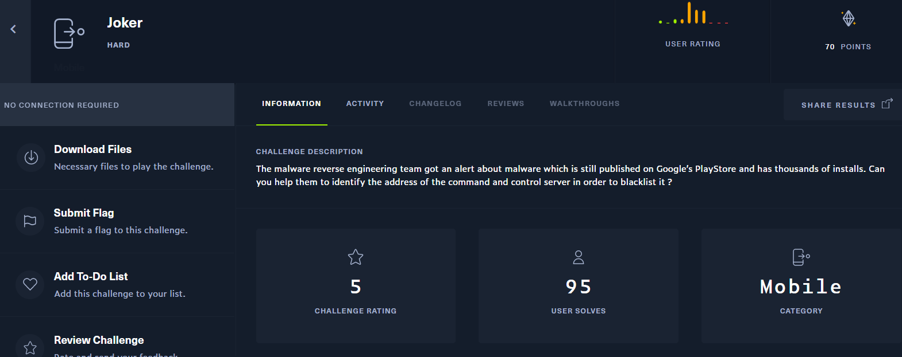
문제를 만든 제작자의 의도를 이해하기 위해 문제 설명을 반드시 확인해봅시다. 해석하면 "구글 스토어에 게시되어 설치되는 악성 소프트웨어들에 대해 블랙 리스트에 추가하기 위해 명령 및 제어 서버의 주소를 식별할 수 있도록 도와달라"는 내용입니다.


앱을 실행하면 빙고 게임을 하게 되고 문제를 풀 수 있는 단서는 보이질 않습니다. 문제의 단서를 찾기 위해 "Jadx(Decompile Tool)"로 앱을 분석해봅시다. "AndroidManifest.xml" 파일에서 "android.intent.action.MAIN"이 정의된 "meet.the.joker.MainActivity" 액티비티가 앱이 실행될 때 처음 호출됩니다.
[meet.the.joker.MainActivity]

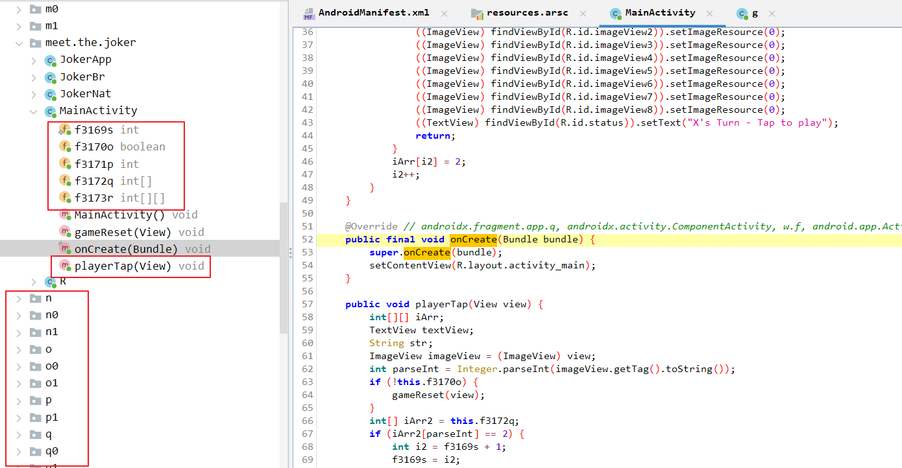
먼저 앱의 구조를 확인하면 난독화가 적용되어 있음을 알 수 있습니다. "meet.the.joker.MainActivity"의 시작 함수인 "onCreate"를 기점으로 분석하면, "playerTap()" 함수는 앱 실행 시 볼 수 있는 빙고 게임 로직입니다. 그러나 그 외에 “flag” 값과 관련된 로직은 찾아 볼 수 없었습니다.
[AndroidManifest.xml]

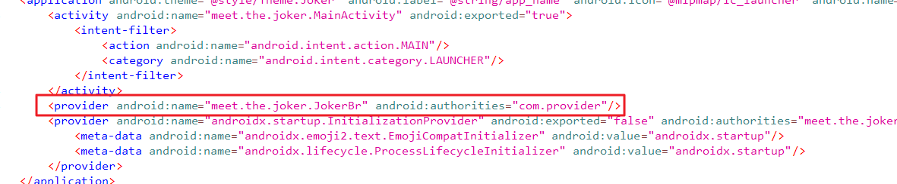
다시 "AndroidManifest.xml" 파일 "<provider>"탭에서 가장 의심스러운 "meet.the.joker.JokerBr" 앱 이 실행될 떄 참조되고 있습니다.
[meet.the.joker.JokerBr]

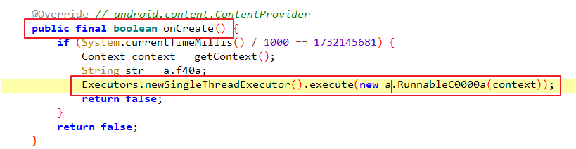
"meet.the.joker.JokerBr"의 onCreate() 살펴보면 특정 조건을 충족하면 실행되는 함수가 있고, 실행되는 a.RunnableC000a() 함수를 따라가면, "a2.a" 클래스에 속한 함수임을 알 수 있다.
"a2.a"클래스를 분석하면 클래스의 흐름은 다음과 같이 진행된다.
“run() → b()복호화된 문자열을 가지고 서버연결 및 응답결과과 "200" 이면 다음 로직 진행 → a()
[c.a.o() 복호화함수]

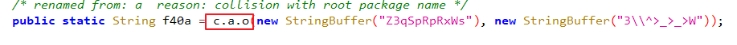

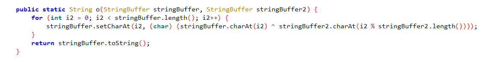
먼저 암호화된 문자열을 복호화 하기위해 "c.a.o" 함수를 분석하여 복호화를 시도한다.
2개의 문자열을 받아 xor연산으로 암복호화하는 함수이다. 해당 함수를 거쳐 암호화되어 있는 문자열이 복호화 된다.

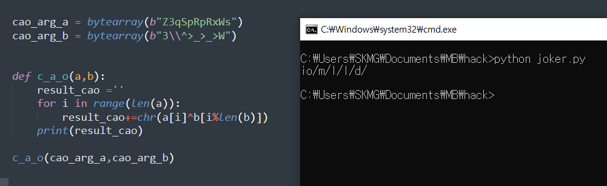
복호화 함수를 python으로 변환하여 암호화되어있는 ”String f40a” 변수의 문자열을 복호화하면 "io/m/l/l/d" 파일 경로로 보이는 문자열이 생성된다.
a2.a.b()_통신 함수

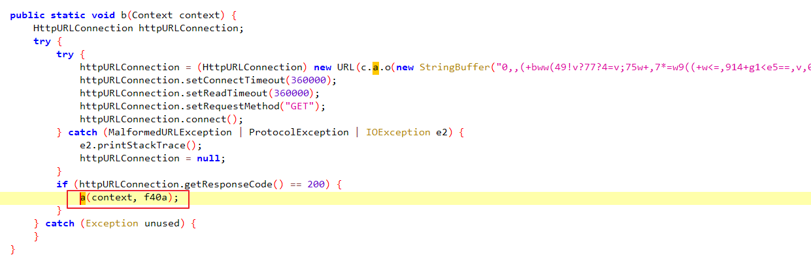
마찬가지로 통신함수에 암호화되어 있는 문자열을 복호화 해보자

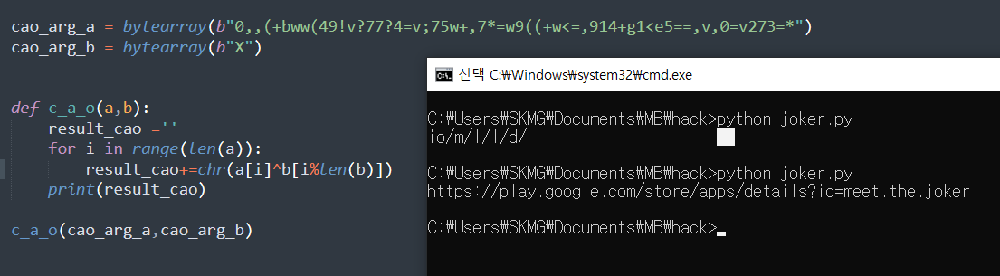
"https://play.google.com/store/apps/details?id=meet.the.joker" url 경로가 생성되었다. 해당 URL 은 접속해도 404가 뜬다. 200이라 가정하고 다음 로직을 보면
"a(context, f40a)" 앞에 복호화 했던 "io/m/l/l/d" 파일 경로를 인자로 받아 진행한다. (따라가보면 "a2.a.a() 함수)
정리하면 “암호화된 문자열 복호화 → a2.a.b() → a2.a.a()” 진행된다.
a2.a.a() 함수 암호화상태

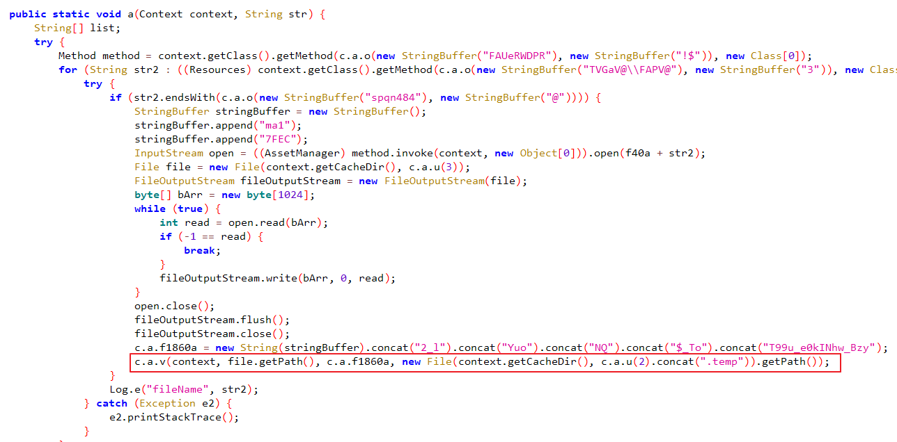
a2.a.a() 함수 복호화상태

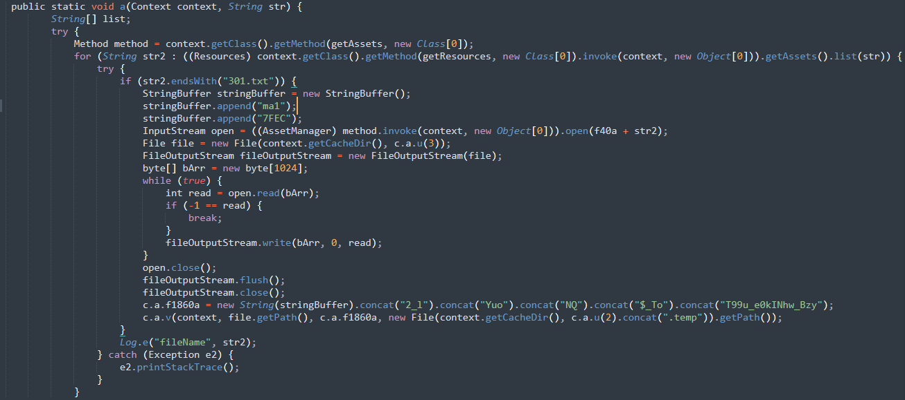
복호화된 함수를 분석해보면, "assets 폴더에서 "io/m/l/l/d" 경로 안에 있는 파일 중 끝이 "301.txt"파일을 찾아, 1024 바이트를 할당한 후, c.a.v() 함수에 "ma17FEC2_lYuoNQ$_To99u_e0kINhw_Bzy"
, 할당된 1024바이트 파일경로와, 새로운 ".temp" 경로를 인자로 전달한다.
c.a.v()_암호화 함수

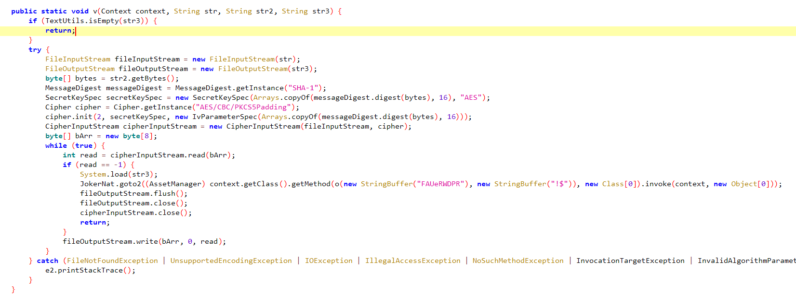
c.a.v() 함수를 분석해보면 AES128 암호화 방식으로 "ma17FEC2_lYuoNQ$_To99u_e0kINhw_Bzy" 키를 사용하여 암호화하여 "assets/io/m/l/l/d" 경로안에 "301.txt"로 끝나는 파일명으로 파일을 생성한다.
이는 곧 해당 파일을 복호화해야 문제를 풀 수 있다는 것이다

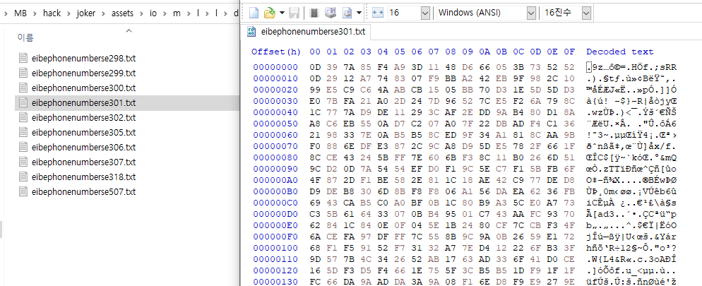
해당 경로에서 301.txt로 끝나느 파일을 열어보면 암호화되어 있다.

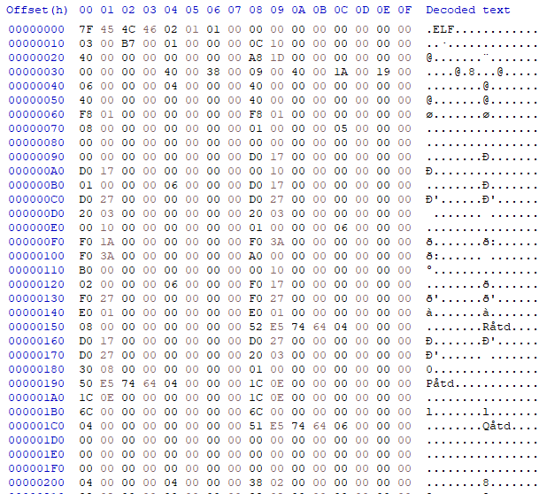
c.a.v() 함수의 AES 암호화 로직을 분석하여 올바르게 복호화 하면 위와 같이 ".SO" 파일을 얻을 수 있다.

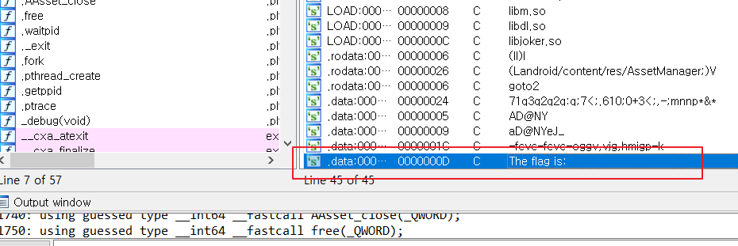
해당 파일을 ida 로 분석해보자. 분석에 시작인 문자열 검색을 해보면 눈에 확 띠는 문자열을 발견할 수 있다.

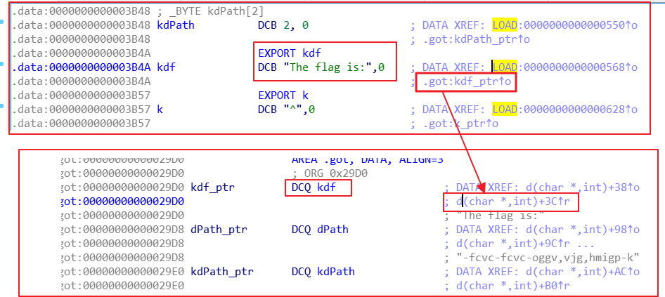
"The flag is:" 이 문자열이 쓰인 함수를 따라가보자

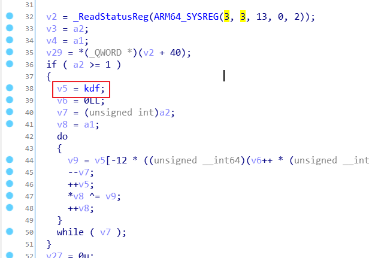
d(char *, int) 함수에서 kdf(kdf=”The flag is:”) 변수로 사용되어지고 있다. 해당 함수를 분석 하기 위해선 a1(arg첫번째)값을 알아야 한다. 다시 d() 함수를 호출한 함수를 찾아내어 a1 값을 알아내야 한다,
d() 함수를 호출한 함수를 찾기 위해 XREF Go! 진행하면… a()함수를 만나게 된다.

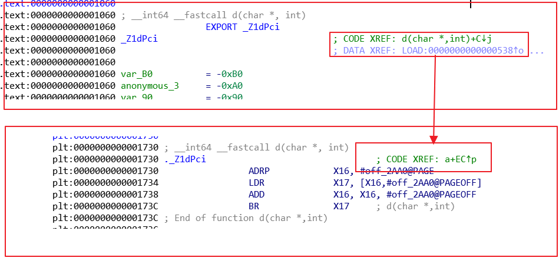
a() 함수에서 d(v10,v9) 로 호출하고 있다. 호출할 때 사용되는 v10, v9 값을 알기 위해 a() 함수를 분석하자.

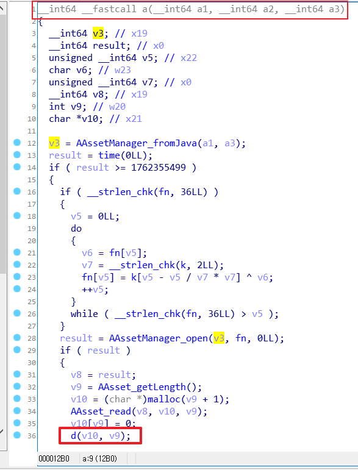
우리의 목표인 d(v10,v9)을 호출하는 로직을 만나려면 "result" 값이 존재해야 한다.
result 값은 "AAssetManager_open(v3, fn, 0LL)"

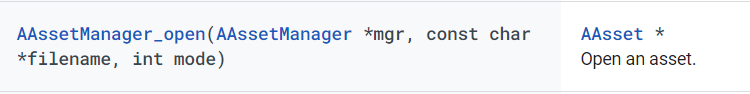
결과 값을 갖고 있다. "AAssetManager_open" 함수는 2번째 인자(fn)로 전달된 파일명을 "assets"폴더안에서 여는 함수이다.

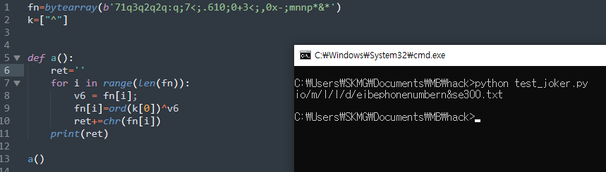

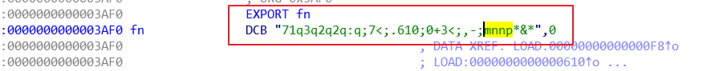

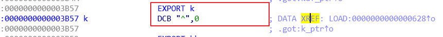
fn 값을 알기 위해 위에 "do ~ while" 로직을 분석해보자.
fn="71q3q2q2q:q;7<;.610;0+3<;,0x-;mnnp*&*" , k="^" 값을 가지고 있다. 해당 로직을 파이썬코드로 구현해서 실행하면 fn 의 값은 "io/m/l/l/d/eibephonenumbern&se300.txt" 이다.
즉 "result" 에는 "/assets/io/m/l/l/d/eibephonenumbern&se300.txt" 파일 내용이 담겨있다.

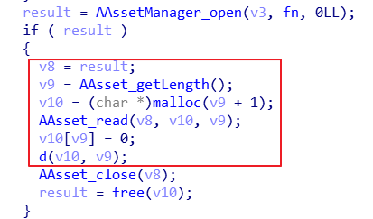
알아낸 정보를 토대로 d(v10,v9) 호출 시 v10 값은 "/assets/io/m/l/l/d/eibephonenumbern&se300.txt" 파일 내용이며, v9 값은
해당 파일의 크기이다.
d(v10,v9)함수 암호화 로직

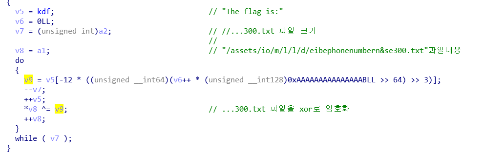
다시 d(v10,v9) 함수를 분석 해보면 "/assets/io/m/l/l/d/eibephonenumbern&se300.txt" 파일을 암호화 시키는 로직이 보인다. 마찬가지로 복호화해야 한다.

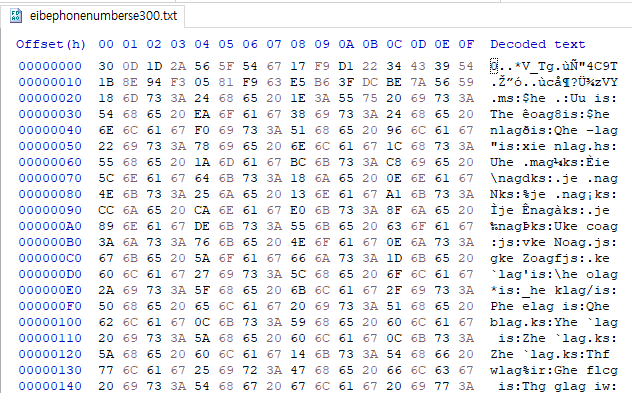
해당경로로 가서 파일을 열어보면 암호화되어 있다.
암호화되어 있더 "/assets/io/m/l/l/d/eibephonenumbern&se300.txt" 파일을 정상적으로 복호화 하면 아래와 같이 dex 파일이 생성된다.

“Jadx”로 복호화한 파일을 열어보면 flag를 획득할 수 있다.